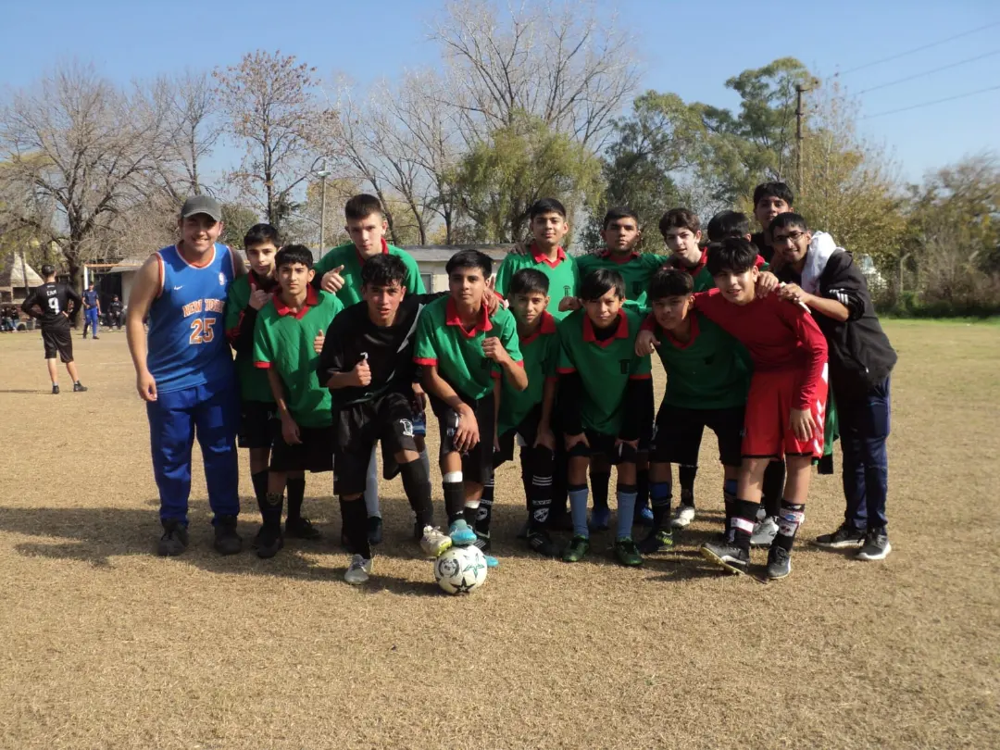
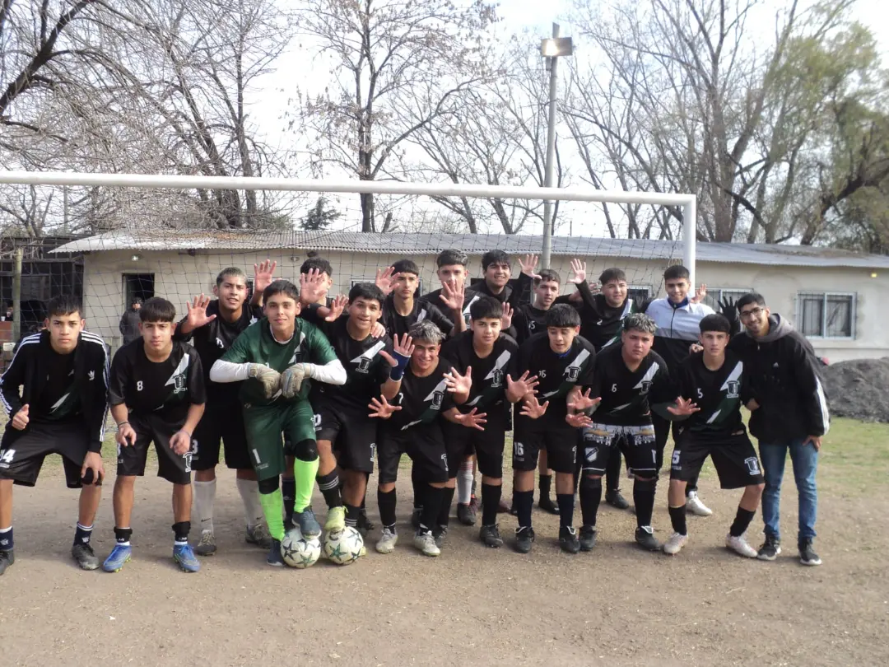
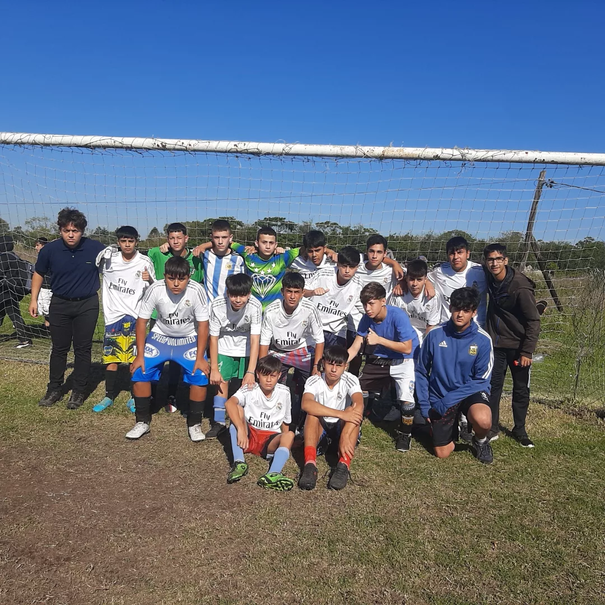
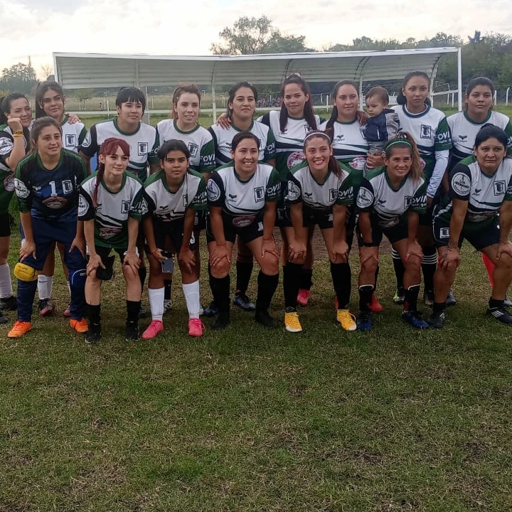

5ªMasculinoQuinta
Ganó 4-1 y se metió en semis.

Masculino y femenino. Competimos en la Copa LiderSur con garra, pasión y mucho corazón.
Competimos con planteles masculinos y femeninos en la Copa LiderSur. Categorías formativas donde lo más importante es crecer juntos, adentro y afuera de la cancha.

5ªMasculinoGanó 4-1 y se metió en semis.

7ªMasculinoGanó 2-1 y pasó a semis.

8ªMasculinoDejó todo en cada partido.

FFemeninoGanó 5-2 y clasificó a semis.
Partido redondo y pase a semifinales.
Goleada y clasificación a semis. ¡Enormes!
Lo sacó adelante y se metió entre los cuatro mejores.

Íbamos abajo 2-0, pero con garra y pasión lo empatamos y lo llevamos a los penales. La figura: nuestro arquero León, que atajó 3 penales y nos metió en la final.